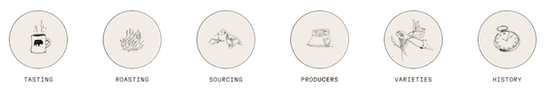

Cada taza es la culminación de años de trabajo, travesías de tres mil millas, y pasión.
Estos son los pasos que damos para asegurarnos de que cada sorbo sea perfecto.
Desde nuestro inicio, Brewed Harmony ha sido un negocio orientado por un propósito,
con auténticas asociaciones con los caficultores que merecen algo mejor.

NUESTRA HISTORIA
Desde que fuimos fundados en 2022, nuestra misión ha sido combatir la plaga del mal café. Café que es desechable, obtenido de manera poco ética y que sabe como un accidente industrial.
Por eso, nos abastecemos de manera justa y sostenible, asegurándonos de que nuestros productores compartan nuestro éxito. Tostamos con precisión y cuidado, garantizando que obtengamos el mejor sabor de cada grano que nuestros cultivadores han trabajado tan arduamente en producir. Y luego vendemos, asegurándonos de que nuestros cleintes vean el brillo ferviente en nuestros ojos.
Porque los grandes cafés, los verdaderamente excepcionales, dependen de que cada etapa del proceso sea perfecta.
Eso es lo que impulsa a Brewed Harmony.
LOGREMOS NUESTRAS METAS JUNTOS
Utilizamos un 100% de energía renovable y compensamos todas nuestras emisiones de CO2, incluyendo las
del
cultivo de café, operaciones de tostado, empaque, transporte de entrada y salida, y calentamiento de
agua
del cliente.
Compramos y utilizamos papel hecho con un 100% de contenido reciclado y reciclamos todo el papel de
oficina, cartuchos de tóner, cartón, vidrio, metal y plástico.
Reciclamos todas nuestras bolsas de café de arpillera vacías al donarlas a agricultores orgánicos
locales
para supresión de malezas y control de erosión.
Reciclamos toda la cascarilla de café, el subproducto orgánico del proceso de tostado, al dárselo a
agricultores orgánicos locales para usarlo como enmienda de suelo rica en nitrógeno.
Donamos mucho más del 1% de nuestras ventas anuales brutas a organizaciones sociales y
medioambientales.
Trabajamos con algunos de los productores de café más dedicados, innovadores y conscientes del mundo.
Lo que pruebas es el resultado de un proceso complejo y deliberado que comenzó a miles de millas de
distancia, quizás generaciones atrás,
y que fue ajustado y perfeccionado en algo que fue creado precisamente para tu placer.
CÓMO PREPARAR EL CAFÉ
¡Compartí una imágen de tu café preparado con nuestros granos Brewed Harmony